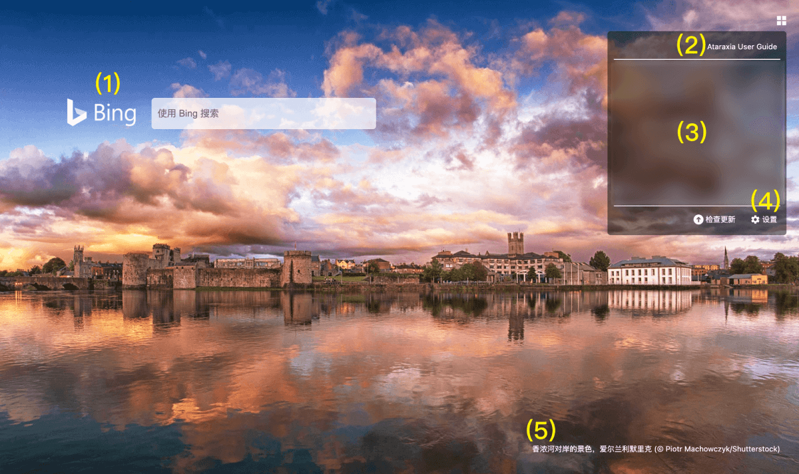

Notice for users in Mainland China:
近期在中国大陆等地访问必应出现问题，导致壁纸无法更新，我们已经提交新的版本至应用商店，正在审核中。在商店版本过审前，您可以 手动下载crx文件 进行更新。
Ataraxia User Guide
Thanks for installing Ataraxia New Tab!

| (1) | Change search engine | Click the logo. |
| (2) | Customize bookmarks | Change this in the Settings page. We do not require bookmark permission, so it's separated from your Chrome browser bookmarks. |
| (3) | Top visited sites | Closed by default. Open it and grant the permission in Settings. |
| (4) | Check update | Click to check update. If you install from Chrome Web Store, it will update automatically. |
| Settings | Please come here if you need to change Settings. | |
| (5) | Change wallpaper | Click to show old wallpapers. (7 days max) |
| Download wallpaper | Click and save. |